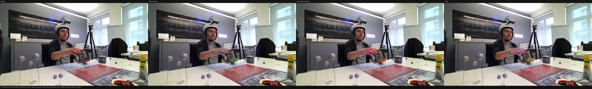
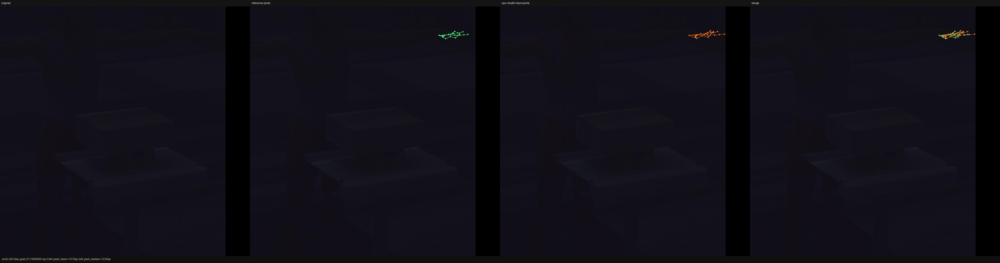
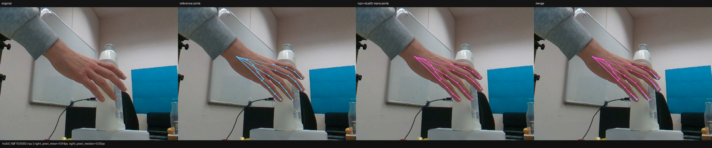
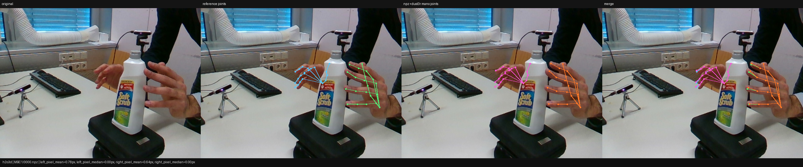

HCU Round Report
Review this page for layout, section order, blocker visibility, and whether it can act as the mandatory document that the next HCU round must read before making any new adapter-side canonicalization change.
openpose_hand_21Round Summary
The top block should answer three questions fast: what changed, did the round preserve invariants, and where should the next round focus.
smplx MANO path.
- Previous round read. The next real iteration should record which previous HTML report it read and which blockers it inherited.
- Scope boundary. Allowed changes remain adapter-side canonicalization only.
- Result snapshot. H2O, DexYCB, HO3D, and H2O3D pass the preview Stage-A threshold; ARCTIC-left and HOT3D-right remain blockers.
Joints Overlay Gallery
Each dataset should show at least one visible joints overlay image in the round report. These are frozen sample images from the previous HCU evidence package, republished here so the page demonstrates the intended visual review surface.






Dataset Results
One row per dataset x side. These are sample values for visual review.
| Dataset | Side | World MPJPE mm | Cam MPJPE mm | Pixel MPJPE px | Stage-A | Blocker |
|---|---|---|---|---|---|---|
| h2o | left | 0.034 | 0.041 | 0.112 | pass | none |
| h2o | right | 0.029 | 0.033 | 0.094 | pass | none |
| dexycb | left | 0.052 | 0.057 | 0.163 | pass | none |
| dexycb | right | 0.061 | 0.065 | 0.181 | pass | none |
| arctic | left | 1.382 | 1.511 | 2.731 | fail | translation sign / crop-camera normalization |
| arctic | right | 0.086 | 0.091 | 0.194 | pass | none |
| hot3d | left | 0.072 | 0.078 | 0.168 | pass | none |
| hot3d | right | 0.922 | 0.845 | 1.236 | close | native joint-order remap likely incomplete |
| ho3d | left | 0.048 | 0.051 | 0.143 | pass | none |
| ho3d | right | 0.051 | 0.056 | 0.149 | pass | none |
| h2o3d | left | 0.064 | 0.073 | 0.188 | pass | none |
| h2o3d | right | 0.059 | 0.062 | 0.171 | pass | none |
Dataset Drilldown
Expandable detail cards are meant to replace ad-hoc chat summaries with one stable visual review surface.
ARCTIC
Left-hand blocker remains visible
fail
HOT3D
Right-hand close-to-pass, remap audit still needed
close
Invariant Checks
A numerically good round is still invalid if it reintroduces dataset-conditioned runner behavior.
- pass Runner path remains single-path
smplx MANO. - pass No
if dataset == ...branch in the unified runner. - pass Canonical output joint order remains
openpose_hand_21. - watch Adapter-side ARCTIC/HOT3D canonicalization still needs refinement.
Blockers First
The next round should start here, not at the pass rows.
- ARCTIC left: translation sign / crop-camera normalization remains the dominant blocker.
- HOT3D right: likely residual native joint-order to
openpose_hand_21mismatch. - Do not touch: unified runner path, backend policy, or passing datasets unless a shared contract bug is proven.
Artifact Index
Public preview shows example repo-local artifact paths instead of clickable private files.
Next Round Plan
This is the section the next iteration must read before it changes anything.
- Prioritize ARCTIC-left adapter canonicalization and keep a before/after diff in the next round summary.
- Audit HOT3D-right joint-order remap with explicit native-order notes and do not touch passing left-side code unless necessary.
- Carry forward the invariant checklist unchanged and fail the round if any runner-level dataset branch appears.